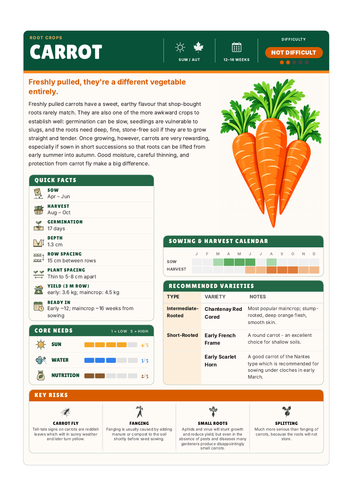
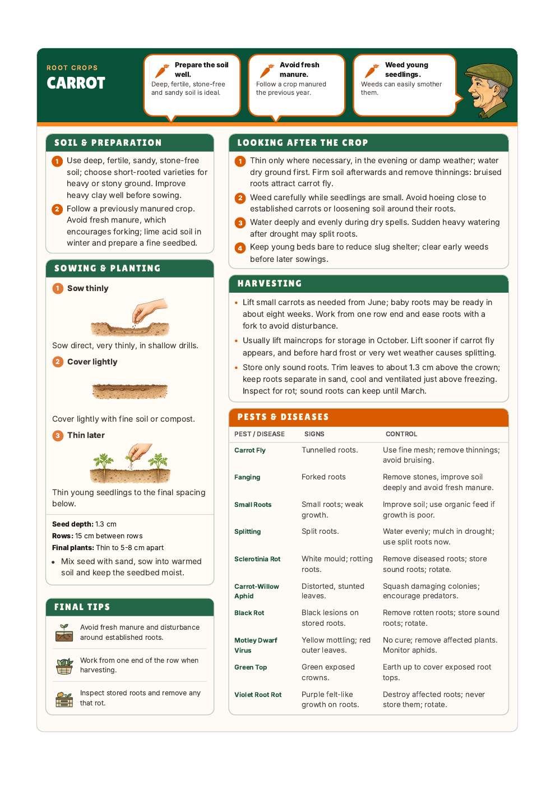

Chunky headings, green panels, orange risk sections and the C-style carrot hero. Page two retains the approved planting illustration, header bubbles, content and widget arrangement. Small pest-table names stay in the body font for clarity.

